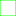

<!doctype html>
<html lang="en">
    <head>
        <meta charset="utf-8">
        <meta http-equiv="X-UA-Compatible" content="IE=edge">
        <meta name="viewport" content="initial-scale=1,user-scalable=no,maximum-scale=1,width=device-width">
        <meta name="mobile-web-app-capable" content="yes">
        <meta name="apple-mobile-web-app-capable" content="yes">
        <link rel="stylesheet" href="css/leaflet.css">
        <link rel="stylesheet" href="css/L.Control.Layers.Tree.css">
        <link rel="stylesheet" href="css/qgis2web.css">
        <link rel="stylesheet" href="css/fontawesome-all.min.css">
        <link rel="stylesheet" href="css/leaflet-search.css">
        <link rel="stylesheet" href="css/leaflet-measure.css">
        <style>
        html, body, #map {
            width: 100%;
            height: 100%;
            padding: 0;
            margin: 0;
        }
        </style>
        <title></title>
    </head>
    <body>
        <div id="map">
        </div>
        <script src="js/qgis2web_expressions.js"></script>
        <script src="js/leaflet.js"></script>
        <script src="js/L.Control.Layers.Tree.min.js"></script>
        <script src="js/leaflet.rotatedMarker.js"></script>
        <script src="js/leaflet.pattern.js"></script>
        <script src="js/leaflet-hash.js"></script>
        <script src="js/Autolinker.min.js"></script>
        <script src="js/rbush.min.js"></script>
        <script src="js/labelgun.min.js"></script>
        <script src="js/labels.js"></script>
        <script src="js/leaflet-measure.js"></script>
        <script src="js/leaflet-search.js"></script>
        <script src="data/TUMBUKALERBIDANG_1.js"></script>
        <script src="data/TUMBUKALER_2.js"></script>
        <script>
        var map = L.map('map', {
            zoomControl:false, maxZoom:28, minZoom:1
        }).fitBounds([[-8.458682637179821,115.61083350284528],[-8.437716444587199,115.65228418440941]]);
        var hash = new L.Hash(map);
        map.attributionControl.setPrefix('<a href="https://github.com/tomchadwin/qgis2web" target="_blank">qgis2web</a> &middot; <a href="https://leafletjs.com" title="A JS library for interactive maps">Leaflet</a> &middot; <a href="https://qgis.org">QGIS</a>');
        var autolinker = new Autolinker({truncate: {length: 30, location: 'smart'}});
        // remove popup's row if "visible-with-data"
        function removeEmptyRowsFromPopupContent(content, feature) {
         var tempDiv = document.createElement('div');
         tempDiv.innerHTML = content;
         var rows = tempDiv.querySelectorAll('tr');
         for (var i = 0; i < rows.length; i++) {
             var td = rows[i].querySelector('td.visible-with-data');
             var key = td ? td.id : '';
             if (td && td.classList.contains('visible-with-data') && feature.properties[key] == null) {
                 rows[i].parentNode.removeChild(rows[i]);
             }
         }
         return tempDiv.innerHTML;
        }
        // add class to format popup if it contains media
		function addClassToPopupIfMedia(content, popup) {
			var tempDiv = document.createElement('div');
			tempDiv.innerHTML = content;
			if (tempDiv.querySelector('td img')) {
				popup._contentNode.classList.add('media');
					// Delay to force the redraw
					setTimeout(function() {
						popup.update();
					}, 10);
			} else {
				popup._contentNode.classList.remove('media');
			}
		}
        var zoomControl = L.control.zoom({
            position: 'topleft'
        }).addTo(map);
        var measureControl = new L.Control.Measure({
            position: 'topleft',
            primaryLengthUnit: 'feet',
            secondaryLengthUnit: 'miles',
            primaryAreaUnit: 'sqfeet',
            secondaryAreaUnit: 'sqmiles'
        });
        measureControl.addTo(map);
        document.getElementsByClassName('leaflet-control-measure-toggle')[0].innerHTML = '';
        document.getElementsByClassName('leaflet-control-measure-toggle')[0].className += ' fas fa-ruler';
        var bounds_group = new L.featureGroup([]);
        function setBounds() {
        }
        map.createPane('pane_GoogleSatellite_0');
        map.getPane('pane_GoogleSatellite_0').style.zIndex = 400;
        var layer_GoogleSatellite_0 = L.tileLayer('https://mt1.google.com/vt/lyrs=s&x={x}&y={y}&z={z}', {
            pane: 'pane_GoogleSatellite_0',
            opacity: 1.0,
            attribution: '<a href="https://www.google.at/permissions/geoguidelines/attr-guide.html">Map data ©2015 Google</a>',
            minZoom: 1,
            maxZoom: 28,
            minNativeZoom: 0,
            maxNativeZoom: 20
        });
        layer_GoogleSatellite_0;
        map.addLayer(layer_GoogleSatellite_0);
        function pop_TUMBUKALERBIDANG_1(feature, layer) {
            var popupContent = '<table>\
                    <tr>\
                        <th scope="row">DESA</th>\
                        <td>' + (feature.properties['DESA'] !== null ? autolinker.link(feature.properties['DESA'].toLocaleString()) : '') + '</td>\
                    </tr>\
                    <tr>\
                        <th scope="row">NIB</th>\
                        <td>' + (feature.properties['NIB'] !== null ? autolinker.link(feature.properties['NIB'].toLocaleString()) : '') + '</td>\
                    </tr>\
                    <tr>\
                        <th scope="row">SU</th>\
                        <td>' + (feature.properties['SU'] !== null ? autolinker.link(feature.properties['SU'].toLocaleString()) : '') + '</td>\
                    </tr>\
                    <tr>\
                        <th scope="row">PBT</th>\
                        <td>' + (feature.properties['PBT'] !== null ? autolinker.link(feature.properties['PBT'].toLocaleString()) : '') + '</td>\
                    </tr>\
                    <tr>\
                        <th scope="row">NOMORHAK</th>\
                        <td>' + (feature.properties['NOMORHAK'] !== null ? autolinker.link(feature.properties['NOMORHAK'].toLocaleString()) : '') + '</td>\
                    </tr>\
                    <tr>\
                        <th scope="row">LUASTERTUL</th>\
                        <td>' + (feature.properties['LUASTERTUL'] !== null ? autolinker.link(feature.properties['LUASTERTUL'].toLocaleString()) : '') + '</td>\
                    </tr>\
                    <tr>\
                        <th scope="row">PEMILIK</th>\
                        <td>' + (feature.properties['PEMILIK'] !== null ? autolinker.link(feature.properties['PEMILIK'].toLocaleString()) : '') + '</td>\
                    </tr>\
                    <tr>\
                        <td colspan="2">' + (feature.properties['NIB2'] !== null ? autolinker.link(feature.properties['NIB2'].toLocaleString()) : '') + '</td>\
                    </tr>\
                    <tr>\
                        <th scope="row">Keterangan</th>\
                        <td>' + (feature.properties['Keterangan'] !== null ? autolinker.link(feature.properties['Keterangan'].toLocaleString()) : '') + '</td>\
                    </tr>\
                    <tr>\
                        <th scope="row">Data-K3Bac</th>\
                        <td>' + (feature.properties['Data-K3Bac'] !== null ? autolinker.link(feature.properties['Data-K3Bac'].toLocaleString()) : '') + '</td>\
                    </tr>\
                </table>';
            var content = removeEmptyRowsFromPopupContent(popupContent, feature);
			layer.on('popupopen', function(e) {
				addClassToPopupIfMedia(content, e.popup);
			});
			layer.bindPopup(content, { maxHeight: 400 });
        }

        function style_TUMBUKALERBIDANG_1_0(feature) {
            switch(String(feature.properties['Keterangan'])) {
                case 'BidangDelineasi':
                    return {
                pane: 'pane_TUMBUKALERBIDANG_1',
                opacity: 1,
                color: 'rgba(14,255,1,1.0)',
                dashArray: '',
                lineCap: 'butt',
                lineJoin: 'miter',
                weight: 1.0, 
                fill: true,
                fillOpacity: 1,
                fillColor: 'rgba(103,203,200,0.0)',
                interactive: true,
            }
                    break;
                case 'BidangK3':
                    return {
                pane: 'pane_TUMBUKALERBIDANG_1',
                opacity: 1,
                color: 'rgba(251,255,1,1.0)',
                dashArray: '',
                lineCap: 'butt',
                lineJoin: 'miter',
                weight: 1.0, 
                fill: true,
                fillOpacity: 1,
                fillColor: 'rgba(115,100,200,0.0)',
                interactive: true,
            }
                    break;
                case 'SertipikatDesaLain':
                    return {
                pane: 'pane_TUMBUKALERBIDANG_1',
                opacity: 1,
                color: 'rgba(255,1,230,1.0)',
                dashArray: '',
                lineCap: 'butt',
                lineJoin: 'miter',
                weight: 1.0, 
                fill: true,
                fillOpacity: 1,
                fillColor: 'rgba(222,158,79,0.0)',
                interactive: true,
            }
                    break;
                case 'SertipikatDesaTumbu':
                    return {
                pane: 'pane_TUMBUKALERBIDANG_1',
                opacity: 1,
                color: 'rgba(255,1,230,1.0)',
                dashArray: '',
                lineCap: 'butt',
                lineJoin: 'miter',
                weight: 1.0, 
                fill: true,
                fillOpacity: 1,
                fillColor: 'rgba(220,80,171,0.0)',
                interactive: true,
            }
                    break;
            }
        }
        map.createPane('pane_TUMBUKALERBIDANG_1');
        map.getPane('pane_TUMBUKALERBIDANG_1').style.zIndex = 401;
        map.getPane('pane_TUMBUKALERBIDANG_1').style['mix-blend-mode'] = 'normal';
        var layer_TUMBUKALERBIDANG_1 = new L.geoJson(json_TUMBUKALERBIDANG_1, {
            attribution: '',
            interactive: true,
            dataVar: 'json_TUMBUKALERBIDANG_1',
            layerName: 'layer_TUMBUKALERBIDANG_1',
            pane: 'pane_TUMBUKALERBIDANG_1',
            onEachFeature: pop_TUMBUKALERBIDANG_1,
            style: style_TUMBUKALERBIDANG_1_0,
        });
        bounds_group.addLayer(layer_TUMBUKALERBIDANG_1);
        map.addLayer(layer_TUMBUKALERBIDANG_1);
        function pop_TUMBUKALER_2(feature, layer) {
        }

        function style_TUMBUKALER_2_0() {
            return {
                pane: 'pane_TUMBUKALER_2',
                opacity: 1,
                color: 'rgba(0,34,254,1.0)',
                dashArray: '',
                lineCap: 'butt',
                lineJoin: 'miter',
                weight: 6.0, 
                fill: true,
                fillOpacity: 1,
                fillColor: 'rgba(255,158,23,0.0)',
                interactive: true,
            }
        }
        map.createPane('pane_TUMBUKALER_2');
        map.getPane('pane_TUMBUKALER_2').style.zIndex = 402;
        map.getPane('pane_TUMBUKALER_2').style['mix-blend-mode'] = 'normal';
        var layer_TUMBUKALER_2 = new L.geoJson(json_TUMBUKALER_2, {
            attribution: '',
            interactive: true,
            dataVar: 'json_TUMBUKALER_2',
            layerName: 'layer_TUMBUKALER_2',
            pane: 'pane_TUMBUKALER_2',
            onEachFeature: pop_TUMBUKALER_2,
            style: style_TUMBUKALER_2_0,
        });
        bounds_group.addLayer(layer_TUMBUKALER_2);
        map.addLayer(layer_TUMBUKALER_2);
        var baseMaps = {};
        var overlaysTree = [
            {label: ' TUMBU KALER', layer: layer_TUMBUKALER_2},
            {label: 'TUMBU KALER BIDANG<br /><table><tr><td style="text-align: center;"></td><td>BidangDelineasi</td></tr><tr><td style="text-align: center;"></td><td>BidangK3</td></tr><tr><td style="text-align: center;"></td><td>SertipikatDesaLain</td></tr><tr><td style="text-align: center;"></td><td>SertipikatDesaTumbu</td></tr></table>', layer: layer_TUMBUKALERBIDANG_1},
            {label: "Google Satellite", layer: layer_GoogleSatellite_0},]
        var lay = L.control.layers.tree(null, overlaysTree,{
            //namedToggle: true,
            //selectorBack: false,
            //closedSymbol: '&#8862; &#x1f5c0;',
            //openedSymbol: '&#8863; &#x1f5c1;',
            //collapseAll: 'Collapse all',
            //expandAll: 'Expand all',
            collapsed: true,
        });
        lay.addTo(map);
        setBounds();
        map.addControl(new L.Control.Search({
            layer: layer_TUMBUKALERBIDANG_1,
            initial: false,
            hideMarkerOnCollapse: true,
            propertyName: 'NIB'}));
        document.getElementsByClassName('search-button')[0].className +=
         ' fa fa-binoculars';
        </script>
    </body>
</html>
